Introduction
Digital marketing is important for brands today because it helps them communicate with customers, promote services and build stronger relationships online. This e-portfolio focuses on Netflix, a well-known streaming platform that operates in a highly competitive market. The brand does not only distribute films and series. It also uses digital channels to create awareness, encourage discussion and keep users engaged over time.
The portfolio covers four main areas. First, it explains the Ladder of Engagement and shows how Netflix moves audiences from simple viewing to deeper participation. Second, it evaluates Instagram using the RACE framework. Third, it assesses the Netflix website through a website checklist. Finally, it discusses AI personalisation as a current digital marketing trend. Overall, the portfolio shows how digital marketing ideas can be applied to a real brand in a practical way.
Ladder of Engagement
The Ladder of Engagement shows that customers do not all interact with a brand in the same way. Some only watch content, while others react, comment, share or create their own content. This is useful in digital marketing because it shows that engagement can move from simple actions to deeper forms of participation, which usually create more value for the brand.
Netflix is a strong example of this model because it connects with users across its platform and social media channels. The brand is not only a place to watch shows. It also creates opportunities for conversation, memes, reactions and fan-made content around popular titles.
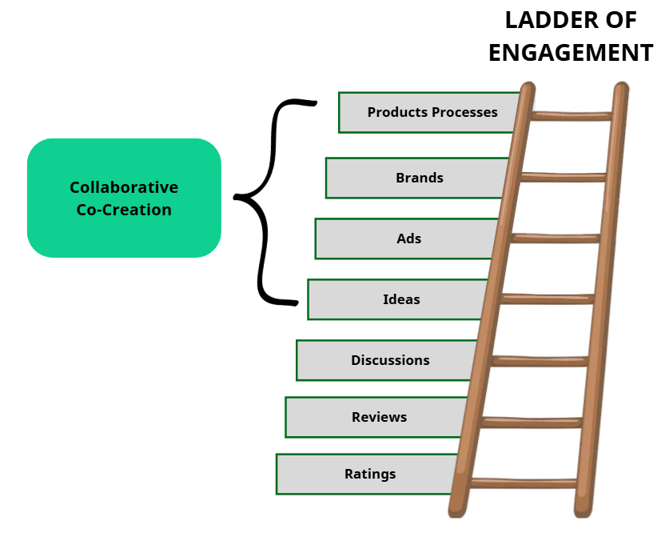
Viewing
Most users first engage with Netflix by browsing the homepage, scanning thumbnails and watching trailers before choosing a title. This is passive, but it remains the starting point of the customer journey.
Reacting
Users then begin to like, tap, react or leave very short responses to trailers and posts. These actions are small, but they show visible interest and help increase social visibility.
Commenting
Comments make engagement more active. Viewers discuss endings, characters and new seasons, which helps Netflix stay visible in algorithm-driven platforms.
Sharing
Once users repost memes, clips and trailers, they become part of the promotion process. Shared content often feels more personal than official advertising.
Creating
At the highest level, users create fan edits, reviews, reaction videos and other original posts about Netflix titles. A smaller group does this, but their effect can still be very strong.
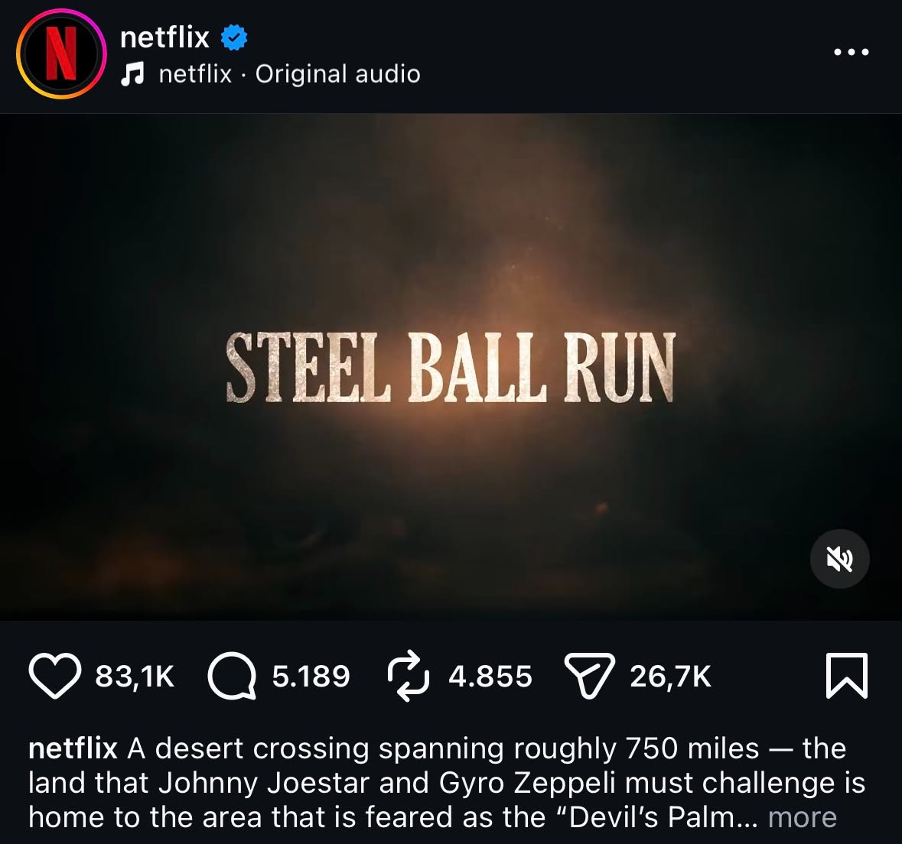
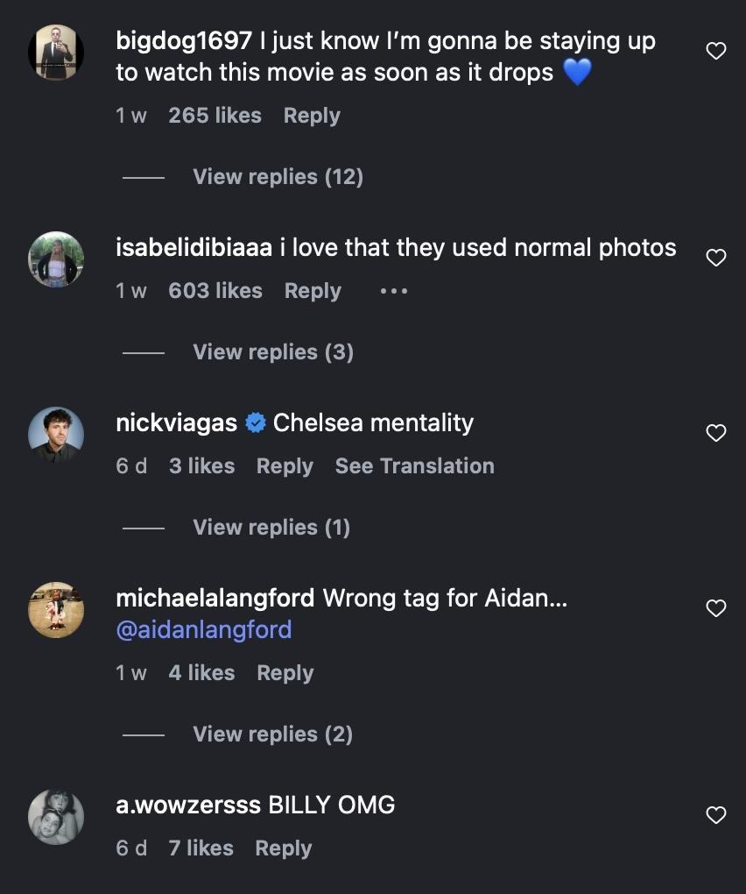
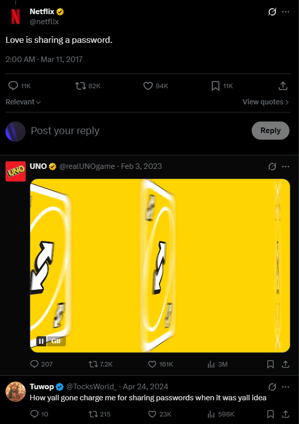
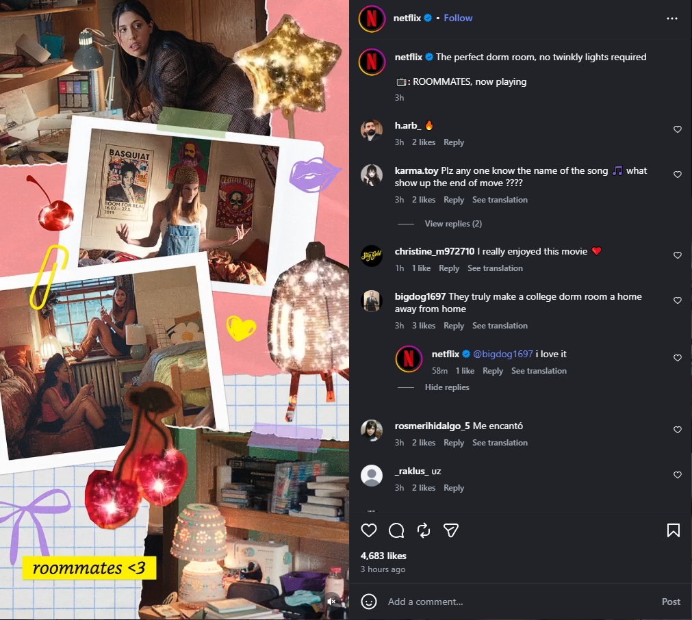
Website Checklist
Websites remain an important part of digital marketing because they help users browse content, make decisions and manage their experience. For Netflix, the website is central to the viewing journey because it supports discovery, playback and account activity.
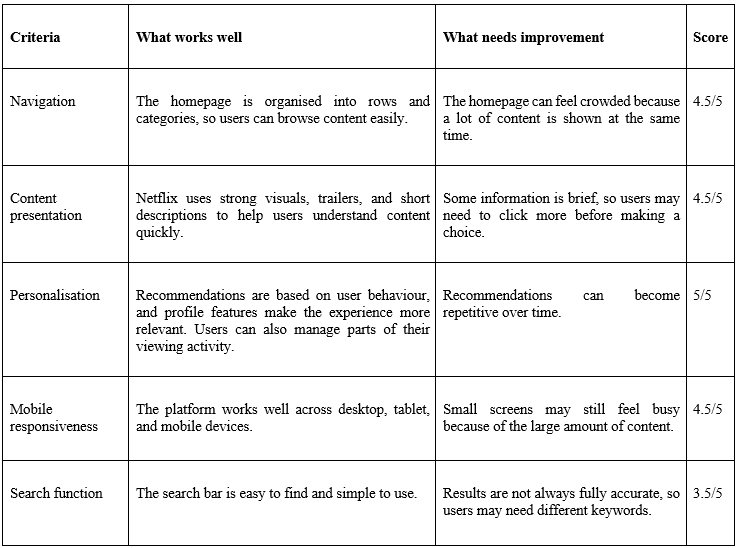
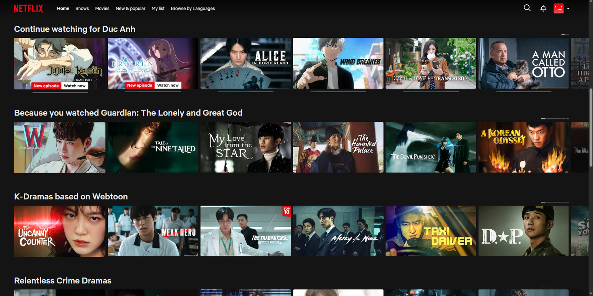
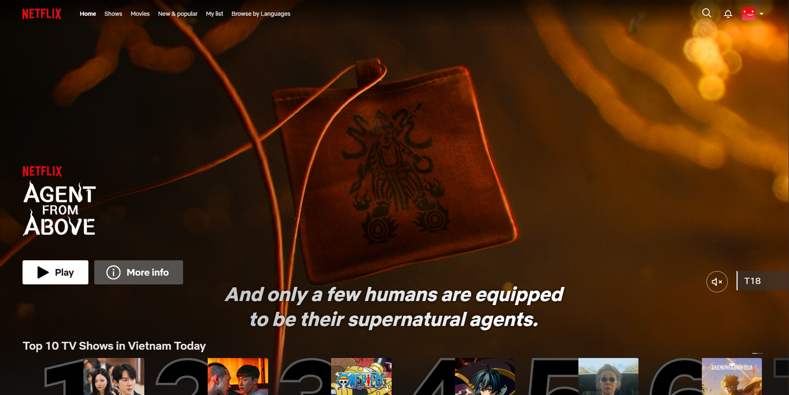
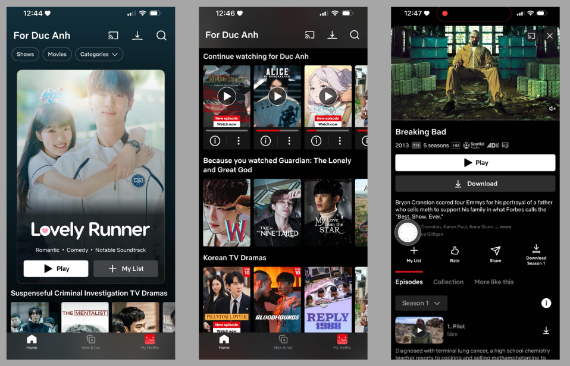
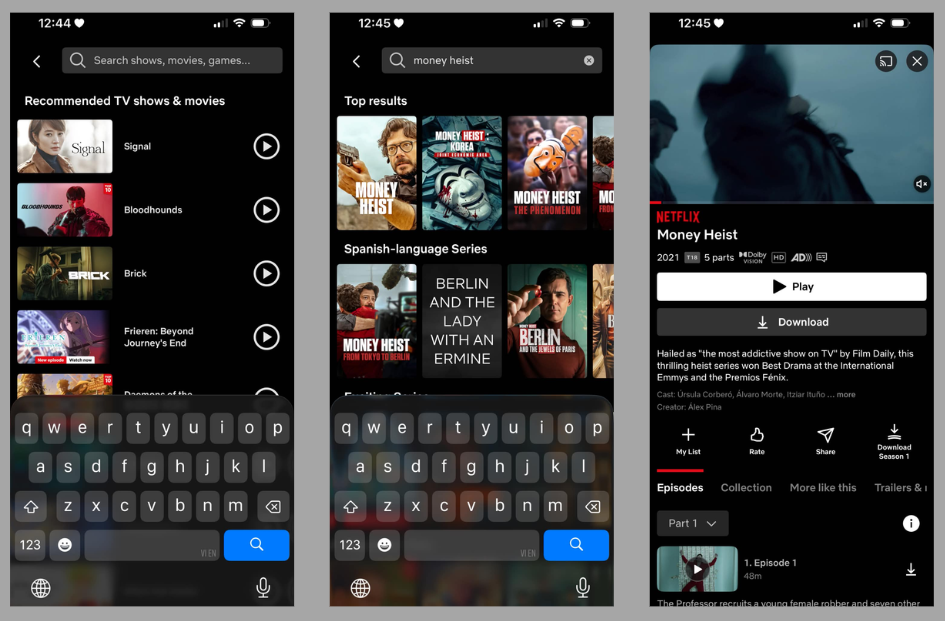
Trend Analysis
One important trend in digital marketing is the growing use of artificial intelligence for personalisation. This is relevant because audiences now expect faster, more relevant and more tailored digital experiences. For Netflix, AI personalisation is one of the brand’s biggest strengths because it helps users find suitable content based on previous behaviour.
This trend improves the user experience by reducing search effort and making content discovery feel more personal. It can also increase satisfaction and time spent on the platform, which supports both retention and business performance.
At the same time, AI personalisation also has limits. If the system recommends similar titles too often, users may see less variety and have fewer chances to discover something unexpected. Privacy is also important because users may not always know how their data is collected and used.
Overall, AI personalisation is highly relevant to Netflix because it supports content discovery, user satisfaction and long-term retention. However, the brand still needs to balance personal relevance with variety, user control and trust.
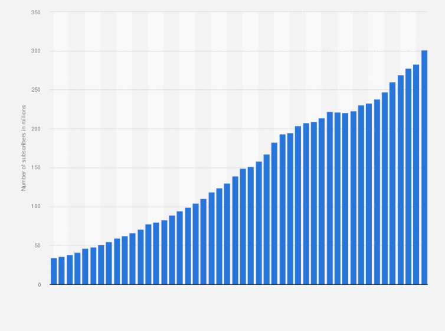
Conclusion
This e-portfolio has shown how digital marketing concepts can be applied to Netflix as a real brand. The analysis of the Ladder of Engagement, Instagram, website checklist and AI personalisation suggests that Netflix is strong at attracting attention, encouraging interaction and creating a personalised digital experience. At the same time, the portfolio also shows some limitations, such as content overload, search accuracy and the risk of over-personalisation. Overall, Netflix remains a strong example of a brand that uses digital marketing effectively to support both short-term attention and long-term audience relationships.
References
1. Chaffey, D. and Ellis-Chadwick, F. (2019) Digital Marketing. 7th edn. Harlow: Pearson.
2. Chaffey, D. and Smith, P.R. (2022) Digital Marketing Excellence: Planning, Optimizing and Integrating Online Marketing. 6th edn. London: Routledge.
3. Chaffey, D., Smith, P.R. and Smith, P.R. (2013) eMarketing eXcellence: Planning and Optimizing Your Digital Marketing. London: Routledge.
4. Cyr, D. (2008) ‘Modeling website design across cultures: Relationships to trust, satisfaction, and e-loyalty’, Journal of Management Information Systems, 24(4), pp. 47–72.
5. Davenport, T.H., Guha, A., Grewal, D. and Bressgott, T. (2020) ‘How artificial intelligence will change the future of marketing’, Journal of the Academy of Marketing Science, 48(1), pp. 24–42.
6. Flavián, C., Guinalíu, M. and Gurrea, R. (2006) ‘The role played by perceived usability, satisfaction and consumer trust on website loyalty’, Information & Management, 43(1), pp. 1–14.
7. Huang, M.H. and Rust, R.T. (2021) ‘A strategic framework for artificial intelligence in marketing’, Journal of the Academy of Marketing Science, 49(1), pp. 30–50.
8. Kaplan, A.M. and Haenlein, M. (2010) ‘Users of the world, unite! The challenges and opportunities of social media’, Business Horizons, 53(1), pp. 59–68.
9. McKinsey & Company (2021) The future of personalization—and how to get ready for it. Available at: https://www.mckinsey.com.
10. Nielsen, J. (2006) Participation inequality: Encouraging more users to contribute. Available at: https://www.nngroup.com/articles/participation-inequality/.
11. Nielsen Norman Group (2020) Website usability: Guidelines and best practices. Available at: https://www.nngroup.com.
12. Smith, P.R. and Zook, Z. (2016) Marketing Communications: Offline and Online Integration, Engagement and Analytics. 6th edn. London: Kogan Page.
13. Statista (2025) Netflix: number of subscribers worldwide. Available at: https://www.statista.com/.
14. Tiago, M.T.P.M.B. and Veríssimo, J.M.C. (2014) ‘Digital marketing and social media: Why bother?’, Business Horizons, 57(6), pp. 703–708.
15. Wedel, M. and Kannan, P.K. (2016) ‘Marketing analytics for data-rich environments’, Journal of Marketing, 80(6), pp. 97–121.
16. Netflix Tudum (2025) How to use Netflix’s new homepage features. Available at: https://www.netflix.com/tudum/articles/netflix-new-homepage-layout-user-guide.
Social Media Platform Evaluation
Instagram is a strong platform for Netflix because it is highly visual and works well for trailers, posters, reels and short clips. This matters because Netflix depends heavily on visual storytelling. Instagram also supports direct communication through likes, comments, reels and stories, which makes it useful for both promotion and interaction.
To evaluate Instagram, the RACE framework is useful because it shows how a brand uses digital channels to create awareness, encourage action, influence behaviour and build ongoing relationships. For Netflix, Instagram is especially important before and after a release because it can build excitement quickly and keep discussions active.
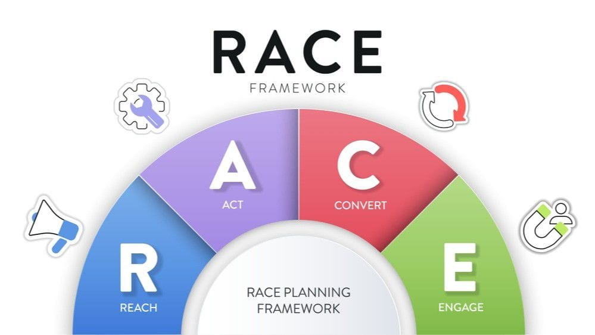
Instagram helps Netflix attract attention through trailers, posters, short videos and reels. This is especially useful when a new show launches and Netflix needs to create awareness quickly.
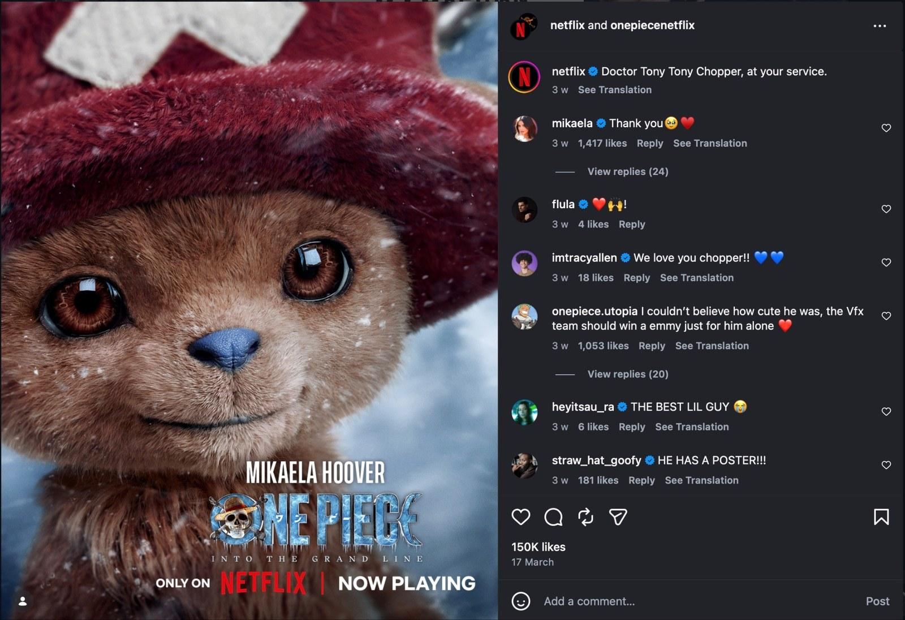
At this stage, users like posts, comment, answer polls and share reels. Humour, character-focused content and recognisable scenes help trigger responses.
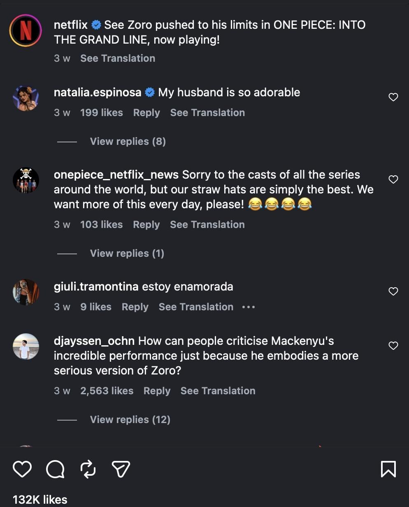
For Netflix, conversion does not mean direct purchase on Instagram. It means moving users from social media interest to actually watching a show on the platform.
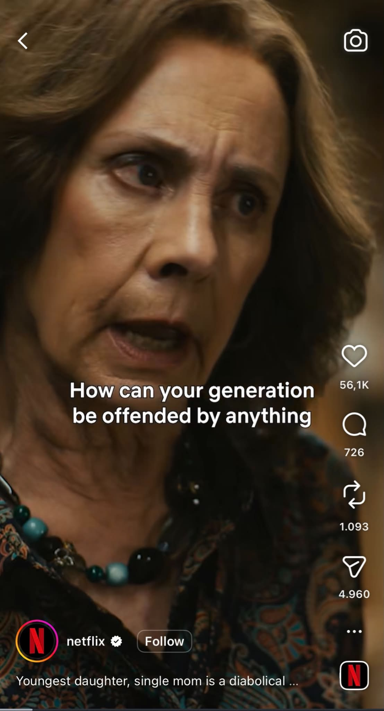
Netflix uses a casual and entertaining tone so that recurring posts, updates and memes keep followers interested over time. This supports longer-term brand relationships.